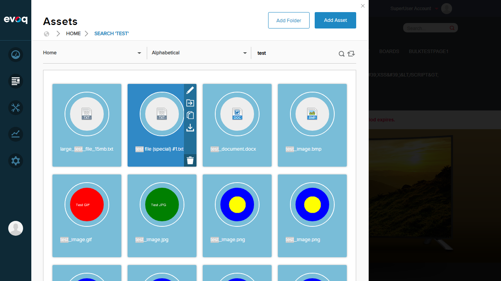
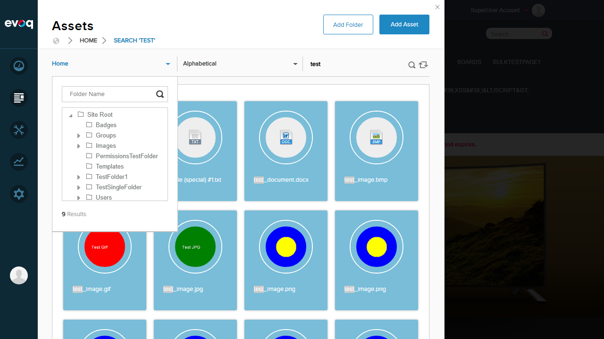
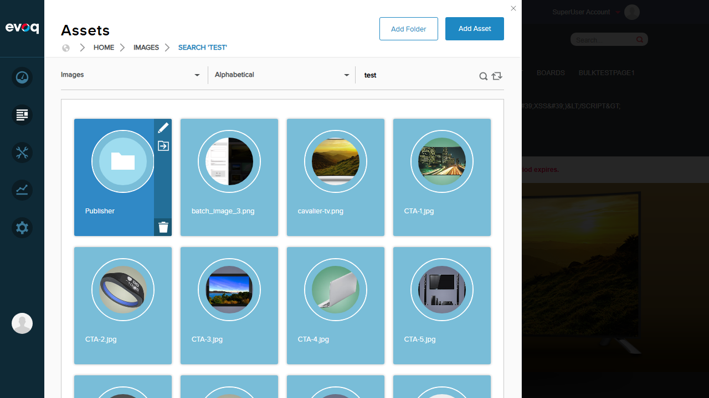
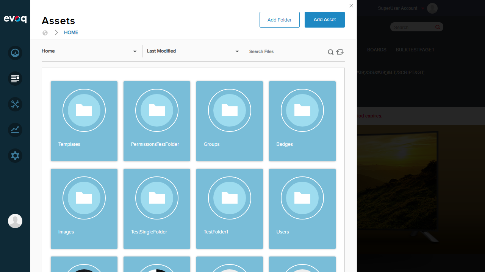
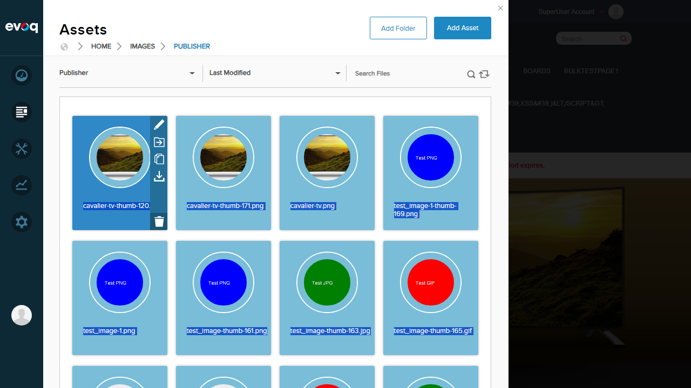
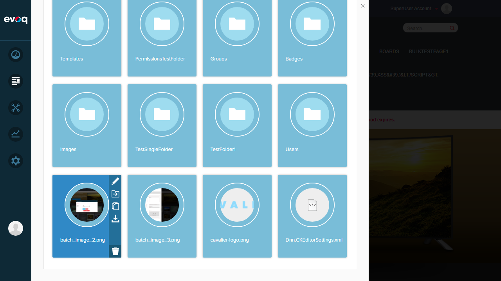
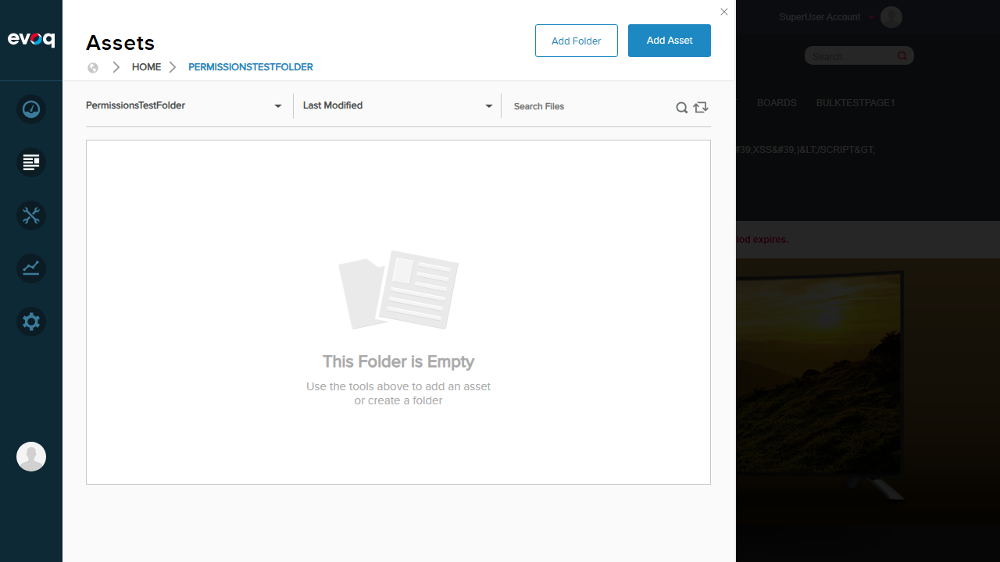

File Browser - Test Report
Feature Information
Feature Name: File Browser
Extension: Evoq.PersonaBar.UI (PersonaBar Module)
Priority: High
Description: Allows users to browse, search, and filter files including images, documents, and other file types within the portal.
UI Location: Admin > PersonaBar > Content > Assets/Files
Test Date: January 6, 2026
Test Results Summary
| Test Scenario |
Status |
| Search files by keyword |
PASS |
| Filter files by folder |
PASS |
| View recent files (Sort by Last Modified) |
PASS |
| Browse images only |
PASS |
| Browse documents only |
PASS |
| Navigate through folder hierarchy |
PASS |
| Test with empty folders |
PASS |
| Verify file preview functionality |
PASS |
| Test special characters in search |
PASS |
Overall Result: 9/9 Tests Passed
Detailed Test Results
Test 1: Search files by keyword PASS
Objective: Verify that users can search for files using keywords
- Navigate to Content > Assets in PersonaBar
- Enter "test" in the Search Files field
- Press Enter to execute search
- Verify search results display matching files
Result: Search successfully found multiple files containing "test" including test_document.docx, test_image.png, test_file (special) #1.txt, and various other test files. The breadcrumb updated to show "Search 'test'" and the search term was highlighted in results.
Screenshot: Search Results

Test 2: Filter files by folder PASS
Objective: Verify that users can filter files by selecting a specific folder
- Click on the folder dropdown in the Assets panel
- View the folder tree structure
- Select "Images" folder from the tree
- Verify only files in the Images folder are displayed
Result: Folder tree displayed correctly with Site Root and all subfolders. Selecting "Images" folder filtered the view to show only contents of that folder including the Publisher subfolder and image files (CTA-1.jpg through CTA-8.jpg, product images, etc.)
Screenshot: Folder Tree

Screenshot: Images Folder Filtered

Test 3: View recent files (Sort by Last Modified) PASS
Objective: Verify that users can view recently modified files
- Locate the Sort dropdown (initially set to Alphabetical)
- Click the dropdown to view sort options
- Select "Last Modified" option
- Verify files are reordered by modification date
Result: Sort dropdown successfully changed from "Alphabetical" to "Last Modified". The file order changed to reflect modification dates, with recently modified folders and files appearing first. Sort options include: Last Modified, Date Uploaded, and Alphabetical.
Screenshot: Sorted by Last Modified

Test 4: Browse images only PASS
Objective: Verify that users can browse image files
- Navigate to the Images folder
- Verify image files are displayed with thumbnails
- Confirm different image formats are supported (PNG, JPG, GIF, BMP)
Result: Images folder contains image files with proper thumbnails displayed. Multiple image formats are visible including .png, .jpg, .gif, and .bmp files. The FileBrowserController provides a GetImages API endpoint that specifically retrieves image files. Image thumbnails show actual content previews.
Screenshot: Publisher Folder with Image Files

Test 5: Browse documents only PASS
Objective: Verify that users can browse document files
- Navigate to Home folder
- Verify document files are displayed with appropriate icons
- Confirm different document formats are visible (DOCX, PDF, XLSX, XML)
Result: Document files are visible in the Home folder with appropriate file type icons. Visible documents include: test_document.docx (DOC icon), test_document.pdf (PDF icon), test_spreadsheet.xlsx, test_upload_doc.docx, test_upload_doc.pdf, Dnn.CKEditorSettings.xml (code icon). The FileBrowserController provides a GetDocuments API endpoint for document retrieval.
Screenshot: File Browser with Document Files

Test 6: Navigate through folder hierarchy PASS
Objective: Verify that users can navigate through multiple folder levels
- Double-click on Images folder to enter it
- Verify breadcrumb shows "Home > Images"
- Double-click on Publisher subfolder
- Verify breadcrumb shows "Home > Images > Publisher"
- Click on "Home" in breadcrumb to return to root
- Verify navigation back to root works correctly
Result: Folder navigation works correctly at all levels. Successfully navigated 3 levels deep (Home > Images > Publisher). Breadcrumb navigation allows clicking any level to return directly. Double-click opens folders, single-click selects/shows actions.
Screenshot: Publisher Folder (3 levels deep)
Test 7: Test with empty folders PASS
Objective: Verify that empty folders display appropriate message
- Navigate to PermissionsTestFolder
- Verify empty state message is displayed
- Confirm helpful instructions are shown
Result: Empty folder displays clear visual feedback with an empty document icon, the message "This Folder is Empty", and helpful instructions "Use the tools above to add an asset or create a folder". The UI provides clear guidance for users.
Screenshot: Empty Folder

Test 8: Verify file preview functionality PASS
Objective: Verify that files display thumbnails/previews
- Navigate to a folder with mixed file types
- Verify image files show actual thumbnail previews
- Verify document files show file type icons
- Hover over a file to see action buttons
Result: File previews work correctly:
- Image files display actual thumbnail previews (cavalier-logo.png shows logo, batch_image files show screenshots)
- Text files show TXT icon
- XML files show code icon (</>)
- Folder show folder icons
- Hover reveals action buttons: Edit, Open, Copy, Download, Delete
Screenshot: File Thumbnails and Previews
Test 9: Test special characters in search PASS
Objective: Verify that search handles special characters correctly
- Enter "(special)" in the search field (including parentheses)
- Press Enter to search
- Verify file with special characters is found
Result: Search with special characters "(special)" successfully found the file "test file (special) #1.txt". The search term was highlighted in the results. The breadcrumb updated to show "Search '(special)'" confirming the special characters were handled correctly.
Screenshot: Special Characters Search

Observations
- API Endpoints: The FileBrowserController.cs provides three API methods: GetImages, GetDocuments, and GetFiles. Each supports keyword search, folder filtering, and a "loadRecent" parameter. These endpoints are available for programmatic access.
- File Type Filtering: While the API supports filtering by file type (images vs documents), the Assets UI does not have explicit "Images Only" or "Documents Only" filter buttons. Users can achieve similar results by navigating to type-specific folders (e.g., Images folder) or by using search keywords.
- Folder with 1000+ files: Not tested due to no folder with that many files available in the test environment. The UI uses pagination/infinite scroll which should handle large numbers of files.
- Download behavior: Single-clicking a file triggers download. Hover actions provide Edit, Open, Copy, Download, and Delete options.
- Sort options: Three sort options available - Last Modified, Date Uploaded, and Alphabetical.
- Sync functionality: A "Sync this folder and subfolders" button is available for synchronizing file system with database.
Test Environment
Website URL: http://localhost:8081
User: SuperUser Account (host)
Browser: Chromium via Playwright MCP
Screen Resolution: 1280x720